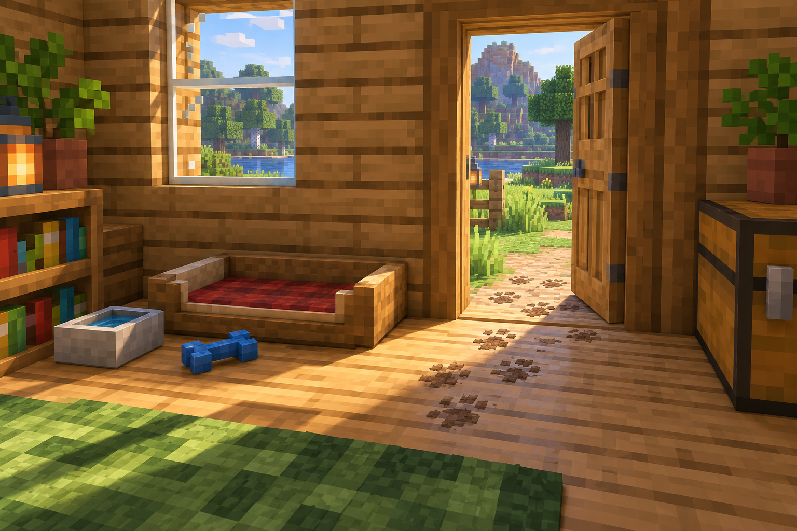
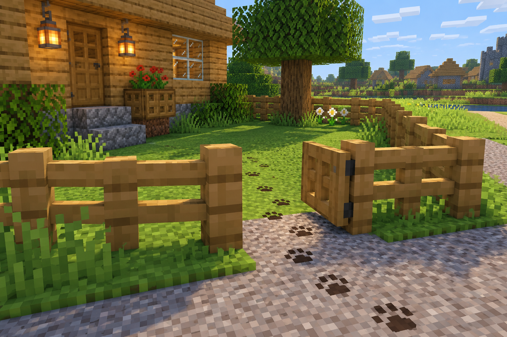
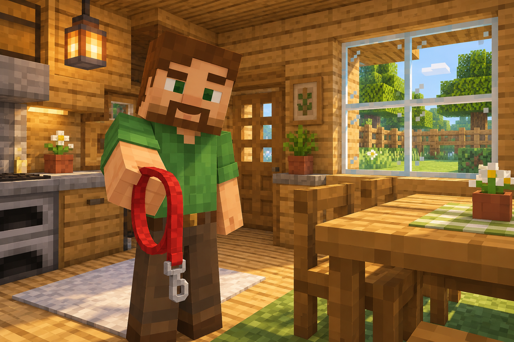
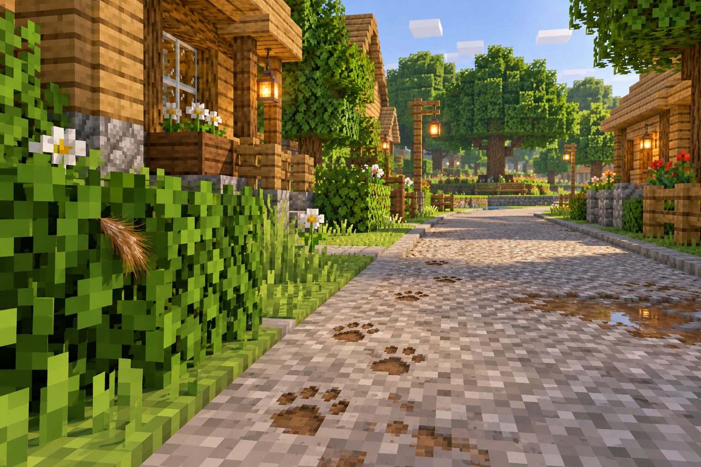
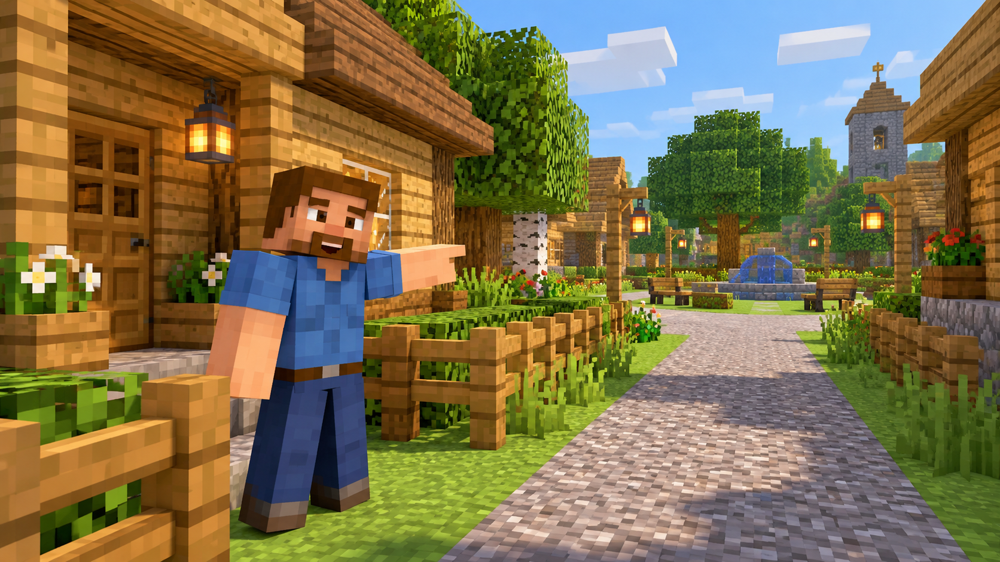

Start inside the house. Read each scene and follow its links to continue.
Your form answers appear in the URL. This HTML version does not save or use them automatically. Remember the item you chose.
Location 1 - The House

You come home from school and call, “Peter! I’m home!” The house is quiet. His bed is empty, his toy is on the floor, and his water bowl is half full. Dirt is beside the back door. Peter’s leash is hanging nearby. Nobody seems to have taken him for a walk.
Your choices
Location 2 - The Backyard

The gate is open. You inspect the gap underneath it and notice paw prints leading toward the street. Leaves have been pushed aside. Peter must have squeezed through here. You decide to follow the prints.
Your choices
Location 3 - Your Parent

“Have you seen Peter?” you ask. “I thought he was in the backyard,” your parent says. You explain that the gate is open. “I must not have closed it all the way. Take his leash and ask the neighbors.” You take Peter’s leash.
Your choices
Location 4 - The Street

Muddy paw prints continue along the sidewalk. You inspect some brown fur caught on a bush. “Peter came this way.” Your neighbor is standing outside, and a small park is farther down the block.
Your choices
Location 5 - The Neighbor

“Have you seen my brown dog?” you ask. “Yes, about ten minutes ago,” your neighbor answers. “He was chasing a squirrel toward the park.” Now you understand how Peter got out. You thank your neighbor.
Your choices
Location 6 - The Small Park

“Peter!” you call. He comes out from behind a bush and wags his tail. A squirrel sits high in a tree. Peter chased it here and stayed nearby. You are relieved to find him safe.
Your choices
Location 7 - Back Home

“You found him!” your parent says. Peter drinks some water and lies down. Together, you close the gate and block the gap. “You caused a lot of trouble today,” you tell him. Peter wags his tail.
Your choices
Good Ending - Peter Comes Home
You followed the clues carefully and found Peter. The dirt, gate, paw prints, fur, and neighbor’s directions helped you solve the mystery. Peter is safe, and the gate is secure.
THE END
Start againLucky Search Ending
You went directly to the park without asking the neighbor. Luckily, Peter is sitting under a tree watching a squirrel. Your parent helps bring him home. Later, you inspect the gap in the gate and understand how he escaped.
THE END
Start againHelp Along the Way Ending
You stay beside Peter and ask your parent to bring a leash. Together, you bring him home safely and close the gate. You learned that following clues and asking for help can solve problems.
THE END
Start again